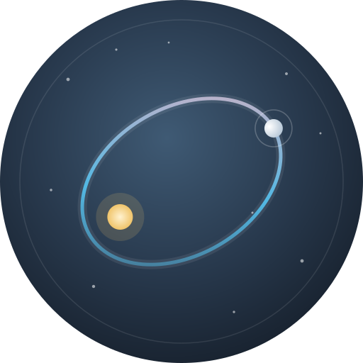

【自测】删除功能验证（马上删掉）
这篇只用来验证「删除」能不能把站点恢复原样。

weimingmingdelight.github.io
昵称 Aphelion，取自轨道上离恒星最远的那一点。写得慢，但一直在写。
这里有同人小说、设定集、练笔，也有一些不成篇的东西。放着给自己看，也欢迎路过的你。
如果哪个故事让你停了一下，欢迎去留言板坐一会儿。
这篇只用来验证「删除」能不能把站点恢复原样。
击败阿提弗帝国后，OP帝国首领ChatGPT带着副官Grok来到莱纳德酒吧小酌，却被一个新来的有着以斯特贵族血脉的侍者引起注意。
“南渐，你真的不好奇彩色的世界吗？”后排的女生戳了戳完全不被哄闹环境影响的男生。南渐缓缓转过身，嘴角上扬，“已经习惯了这样的视野。”